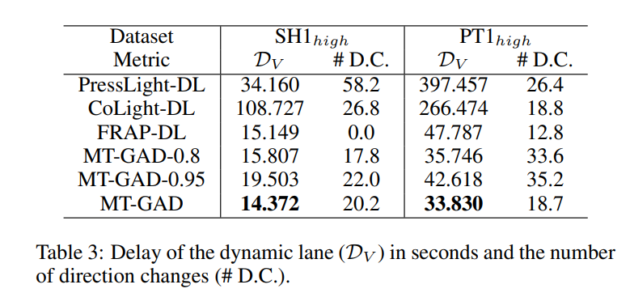

- 论文：IJCAI-21 Dynamic Lane Traffic Signal Control with Group Attention and Multi-Timescale Reinforcement Learning
- 论文阅读时长：5h
- 笔记整理时长：3h
- 概要：论文指出了现有的基于强化学习的交通信号灯控制模型在包含动态车道的交叉路口中表现的局限性，并在此基础上提出了MT-GAD模型，使用分组注意力（group-attention）提升了其在上述问题中的表现。
- 论文亮点：
- 论文将信号灯控制和动态车道（dynamic lane）控制不应该是两个独立的问题，并构建了模型将两者相结合，这是最重要的创新点，同时也具有非常强的现实意义
- 将分组注意力（group attention）应用于DQN，更好的引导模型关注不同重要度的交通流信息
- 使用了多时间尺度（multi-timescale training）进行模型训练，用于维护模型中动态车道控制部分的长效性表现
问题引入与相关研究
问题描述
交通信号灯和车道的出现为缓解城市交通拥堵问题做出了不可磨灭的贡献。交通信号灯主要用于控制和调节交叉路口的交通流量；而将道路划分为车道则可以使得车辆在道路中并行前行，减少交通冲突。此外，车道也经常被用于限制交叉路口车辆的转向方向，起到约束和引导车辆移动的作用。可以说交通信号灯和车道是城市交通控制中重要且不可分割的一部分。
- 交通信号灯控制的研究动机：目前绝大多数交通信号灯依然使用简单的计时器进行控制。事实上，在大多数交通量可预测或稳定的繁忙区域中，这样的控制策略已经十分有效。然而，随着近年来智能交通体系的应用，人们开始期待获得更加人性化和高效的交通信号灯控制系统，特别是：
- 在面对突如其来的交通流量变化时，提供更加智能的信号灯控制策略，能对不可预测的变化进行自适应的感知
- 在面对交通流量零星的郊区路口时，提供更加人性化的信号灯控制策略，减少驾驶员在空闲路口中不必要的停车等待
- 动态车道的研究动机：传统的车道在进入交叉路口前约束车辆的转向，以起到控制和引导车辆移动的作用。而动态车道（可变车道）是一种可以动态改变车道方向的车道。它依然约束车辆的转向，但却车辆在此车道的转向方向可以动态变化。改变一个路口中某条动态车道的转向可能会对该路口带来短期的负面影响，但合适的动态车道控制策略可以从宏观角度改变交通流的承载能力，非常适合用于在高峰时期改善交通流量。
相关研究
无论是交通信号灯控制问题，还是动态路口控制问题，都已有较多相关研究。以下为例：
- 对交通信号灯控制的研究：
- Self-organizing traffic lights: A realistic simulation [Coolset al., 2013]：提供了一种启发式的信号灯控制策略，可以根据正在进入车道的车辆数量自适应调整信号灯的控制策略
- AttendLight: Universal Attention-Based Reinforcement Learning Model for Traffic Signal Control [Oroojlooy et al., 2020]：将注意力机制引入到强化学习算法中，提升模型对不同车道数的交叉路口的泛化性能
- MaCAR: Urban Traffic Light Control via Active Multi-agent Communication and Action Rectification [Yu et al., 2020]：使用多智能体强化学习框架，通过不同智能体之间进行通信，提升了模型对多个交叉路口控制时的整体性能
- 对动态车道控制的研究：
- Research on Variable Lane Signalized Control Method [Li et al., 2009]：提出了一种启发式的动态车道的分配策略，实验表明能够减少车辆平均等待时间和路口队伍的平均长度
- Research on variable lane control method based on traffic priority [Zhou et al., 2019]：主要研究了动态路口控制问题中，为避免车道转向变化造成交通流混乱而设置虚拟停车线的方法
- Modeling and Control of Variable Approach Lanes on an Arterial Road: A Case Study of Dalian [Yao et al., 2018]：将车辆类型、左转时间间隔等要素，构建了一种对可变车道控制中总延误时间最小化的最优化模型
然而，以上工作都讲交通信号灯控制和动态车道控制作为独立的研究课题，忽略了两者之间的相关性。在这些研究的基础上，论文提出了一个能够同时执行这两项任务的模型，以期待更好的协同控制交通流。
定义与建模
在论文中，写明的或隐含的重要假设如下：
- 只考虑十字路口，即交叉路口只有四个方向（东、南、西、北）
- 不予考虑右转车道的放行状态，因为论文认为右转车道永远是绿灯，且几乎不会影响其他车辆的通行。因此，交叉路口只包含 8 个 DTF
- 动态车道只支持在直行或左转中进行选择，且总是道路中最左侧的车道
- 对于每一时刻， $w_{X,Y}$ 、 $q_{X,Y}$ 、$sig_{X,Y}$ 、 $t_{X,Y}$ 、 $p_{X,Y}$ 是可观测的（具体定义详见 3.1 节）
- 信号灯模式和动态车道模式的决策只与当前时刻的 $w_{X,Y}$ 、 $q_{X,Y}$ 、$sig_{X,Y}$ 、 $t_{X,Y}$ 、 $p_{X,Y}$ 有关，与其他因素独立
- 最优化的目标为整个实验过程中平均每一时刻平均每一车道正在排队的车辆数
在论文中，模型的构建建立在如下定义的基础上：
- 交通流 $F_{X,Y}$（directional traffic flow, DTF）：即在某个交叉路口中，从某方向流往另一个方向的交通流。定义 $X \in \left\{ N,S,E,W \right\}$ 表示东、南、西、北中的一个方向，$Y \in \left\{ S,L,R \right\}$ 代表执行、左转、右转中的一个转向，则一条 DTF 可以由 $F_{X,Y}$ 唯一确定
- 信号灯模式 $P_t$ （phase）：在 $t$ 时刻的信号灯控制模式，用于表达该时刻每一条交通流 $F_{X,Y}$ 是否被交通信号灯放行。为了保障安全，信号灯控制模式不应当同时放行有交错的交通流。以此为前提，为了保障效率，每个信号灯模式会尽可能多的选择不冲突的交通流放行
- 动态车道模式 $V_t^X$ ：在 $t$ 时刻下方向 $X$ 下的动态车道的模式， $V_t^X \in \left\{ S,L \right\}$
在此基础上，论文提出了基于 DQN 算法的 MT-GAD 模型进行求解。
MT-GAD模型构建
为了理解论文提出的 MT-GAD 模型，需要对强化学习的基本设定和 DQN 的基本概念有一定的了解。限于篇幅原因，这一部分介绍被放在了附录中（详见第5章）。
构建强化学习环境
基于 DQN 的强化学习模型需要定义 State、Action 和 Reward ，MT-GAD 对它们的定义如下：
- 状态 State：MT-GAD 的状态由 $w_{X,Y}$ 、 $q_{X,Y}$ 、$sig_{X,Y}$ 、 $t_{X,Y}$ 、 $p_{X,Y}$ 表达，其中：
- $w_{X,Y}$：$F_{X,Y}$ 中正在等待的车辆数
- $q_{X,Y}$ ：$F_{X,Y}$ 中的车辆数（即等待和进近的车辆综述）
- $sig_{X,Y}$ ：$F_{X,Y}$ 正在接受的交通信号
- $t_{X,Y}$ ：$sig_{X,Y}$ 在 $F_{X,Y}$ 已经持续的单位时间数
- $p_{X,Y}$ ：在 $F_{X,Y}$ 未来的一段时间中预计会进近的车辆数（使用 LSTM 估计）
- 行为 Action：MT-GAD 的行为由 $A^V$ 和 $A^P$ 表达，其中：
- $A^V$ ：下一单位时刻的信号灯模式 $P_{t+1}$
- $A^P$ ：下一单位时刻的动态车道模式 $V_{t+1}$
- 奖励 Reward：MT-GAD 的优化目标为平均每一时刻平均每一车道正在排队的车辆数。因此，奖励被定义为上一单位时间至本单位时间期间内，平均每一时刻平均每一车道正在排队的车辆数。
在此基础上，MT-GAD 模型分为交通流特征提取（Traffic Flow Information Extraction）、基于分组注意力机制（group attention）的行为编码生成（Action Embedding Generation）和多时间尺度训练（Multi-timescale Training）三部分。MT-GAD 的模型结构如下图所示。
接下来将具体介绍模型中这三个部分的实现细节。
Traffic Flow Information Extraction
上文已经提到，交通信号灯控制任务更多关注短期收益，而动态车道控制任务则更多关注长期收益。因此，论文认为他们需要在上述状态中进行进一步的特征处理，以进一步缩小无关因素造成的影响：
- 信号灯控制编码生成：接收所有短期特征作为输入（即 $w_{X,Y}$ 、 $q_{X,Y}$ 、$sig_{X,Y}$ 、 $t_{X,Y}$ ），对于每一条 DTF 使用两层全连接分别生成对应的编码，将生成结果与 $P$ 进行组合作为输出
- 动态车道控制编码生成：接收所有长期特征作为输入（即 $q_{X,Y}$ 、$p_{X,Y}$ ），对于每一条动态车道使用两层全连接生成对应的编码，将生成结果与 $V$ 进行组合作为输出
编码生成均通过两层全连接完成，对于每一个 $F_{X,Y}$ ，生成对应的编码 $h_{F_{X,Y}}^P$ 和 $h_{F_{X,Y}}^V$ 。
Action Embedding Generation
注意力机制可以有效帮助模型关注到每一条 $F_{X,Y}$ 的编码信息（即 $h_{F_{X,Y}}^P$ 和 $h_{F_{X,Y}}^V$ ），为了进一步引导模型在行为编码生成过程中正确注意直接相关和间接相关的信息，论文采用了组注意力机制——将直接相关的编码信息作为一组，将间接相关的编码信息作为另一组，并在此基础上建立注意力机制。
以某一时刻的支持 $F_{N,S}$ 和 $F_{S,S}$ 的信号灯模式 $P_t$ 为例，与其直接相关的交通流有 $F_{N,S}$，$F_{S,S}$（因为这些交通流在 $P_t$ 下为绿灯），而 $F_{E,S}$，$F_{E,L}$，$F_{W,S}$，$F_{W,L}$，$F_{N,L}$，$F_{S,L}$ 则间接相关（因为这些交通流在 $P_t$ 中被阻碍）。那么：
- $G_1=\left\{ F_{N,S}, F_{S,S} \right\}$
- $G_2=\left\{ F_{E,S}, F_{E,L}, F_{W,S}, F_{W,L}, F_{N,L}, F_{S,L} \right\}$
- $E_{P_t}=\sigma\left(w\left(w^1Attention(G_1) + w^2Attention(G_2) \oplus P_t \right) + b\right) $
同理，以某一时刻的支持 $F_{N,S}$ 的动态车道模式 $V_t$ 为例，与其直接相关的交通流有 $F_{N,S}$ ，对其有较大影响的交通流有 $F_{N,L}$ 和 $F_{S,S}$ （它们的影响程度可能是不同的），而剩余所有交通流只与它们间接相关（因为无论该动态车道如何控制，都会限制这些交通流的通行）。那么：
- $G_1=\left\{ F_{N,S} \right\}$
- $G_2=\left\{ F_{N,L} \right\}$
- $G_3=\left\{ F_{S,S} \right\}$
- $G_4=\left\{F_{E,S}, F_{E,L}, F_{W,S}, F_{W,L} F_{S,L} \right\}$
- $E_{V_t}=\sigma\left(w\left(w^1Attention(G_1) + w^2Attention(G_2) + w^3Attention(G_3) + w^4Attention(G_4) \oplus V_t \right) + b\right) $
$E_{P_t}$ 和 $E_{V_t}$ 即该层的输出。
Multi-timescale Training
为了帮助强化学习模型更好的对交通信号灯控制任务的短期收益，对动态车道控制任务的长期收益有较好的关注，在计算 reward 时，对两者引入了不同的折扣因子 $\gamma$（discount factor）。在强化学习中，较大的折扣因子将导致折扣奖励（discounted reward）更关注长期的收益，反之亦然。
若定义 $\gamma_P$ 为 $P$ 的折扣因子， $\gamma_V$ 为 $V$ 的折扣因子，则有损失函数：
$L=Q(s_t,a_{ij};\theta) - \left(0.5 \cdot \gamma_P \cdot \max_{P_i^\prime}Q(s_{a_{ij},t+1},P_i^\prime) + 0.5 \cdot \gamma_V \cdot \max_{V_j^\prime} Q(s_{a_{ij},t+1},V_j^\prime;\theta^\prime) + r_{a_{ij},t} \right)$
实验
实验设定与评估指标
为了更加有效的测试模型在动态道路上的长期效果，论文没有采用公开的一小时交通流数据集，而是选用了来自上海和葡萄牙波尔图的出租车轨迹数据进行模拟，对每周的流量进行聚合得到了以24小时作为周期的交通流数据集，并选择了若干个具有代表性的交叉路口用于实验。
由于在过去的工作中，没有同时考虑信号灯控制和动态道路控制任务的模型，本文将过去信号灯控制模型的动作空间添加动态道路 $V$ 的空间用于训练。论文使用平均每一时刻平均每一车道正在排队的车辆数作为评估指标。
此外，论文还测试了模型在训练数据集和测试数据集不同时的模型鲁棒性表现，并比较了不同的折扣因子 $\gamma$ 对模型的影响，以验证 Multi-timescale Training 的有效性。
实验结果
在使用各数据集进行训练和测试中，本文所使用的 MT-GAD 模型在所有交通流空闲时具有较好的表现，在拥挤的情况下有更好的表现。
在使用 $SH1_{high}$ 训练的模型用于其他数据集测试中（其他路口或将原有路口旋转），本文模型几乎没有性能下降，具有最好的适应性。
在使用不同折扣因子的条件下，模型表现均有所下降。这表明了Multi-timescale Training 的有效性。

